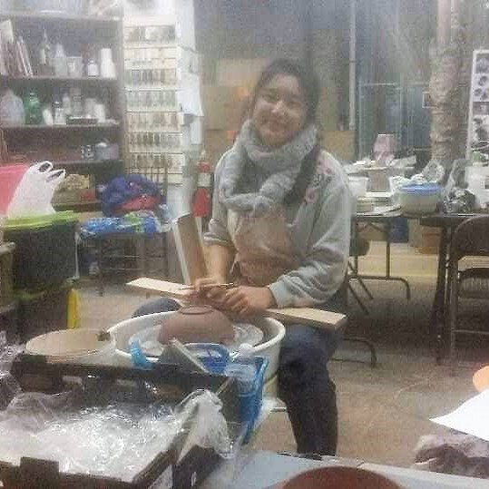
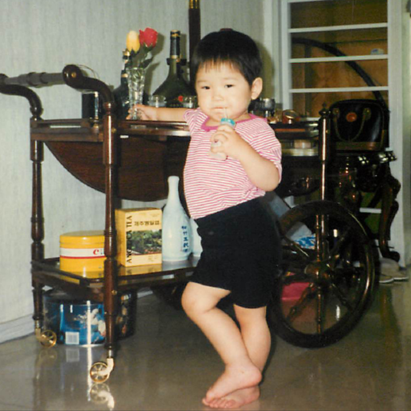

Listening to Palette right now. It really captures the essence of being twenty-five, and let me just say, “I like it.”
IU sings about the things she likes at twenty-five – buttoned pajamas, lipstick, short hair, her palette, diaries, and the times she fell asleep.
Here are the things I like at twenty-five – calls with my siblings and friends, photos of Yonggi, playing guitar, my fountain pen, floral wrap dresses and silk scarves, and today when my dad and I howled with laughter as the total at the gas pump came out to $37.01.
At this age, you feel so different from your younger self – you feel grown-up and sophisticated, but you’re still laughably young and maybe too confident.
It’s probably the rice wine, but I can’t help but laugh looking back on this year. All the times I’d find myself in impossibly stupid situations thinking, “I’m twenty-five! I shouldn’t be making these mistakes” seem inconsequential now. The truth is I make these mistakes because I’m still young and have so much left to learn and so much more to go. Words can’t express how immensely grateful I am to have friends and family who are willing to walk with me.
Thank you.
#srsly
learning guitar
Back in January, a group of us casually sang while someone played the guitar, and I found the experience to be incredibly captivating. I loved it, and the following week when we without it, I craved it.
So on April 25th, I decided to take my first step and picked up my family’s old guitar. Fast forward five months to when I can only play chords (ha!), but I still feel grateful.
Grateful to be able to sing my favorite songs with guitar accompaniment whenever I want (outside of apartment quiet hours). Grateful to have another expressive outlet during this strange time. Grateful to have relearned the value of starting from scratch and going on the journey of learning something new.
It’s humbling and empowering to go through that process.
After the first few days, I remember feeling pain in my left wrist and finger pads (blisters were forming). Two weeks in, I contemplated giving up after wondering how anyone could play the F bar chord. Still, after about a month of practicing, it became something I looked forward to everyday. Even when I had a terrible, horrible, no good, very bad day, I felt great comfort in being able to fill my apartment with the sounds of the music that I had made. It didn’t always sound right and there wasn’t a whole lot that I could play, but the experience was so freeing because I didn’t have to depend on somebody else to create it for me.
In this random town alone, I proved to myself that I didn’t need anyone to start building the life that I want.
#srsly
empty room
It has been nearly two months since my last post, and I feel that I can write comfortably again. I’d surmise that the few people who would check in now and then have forgotten about this blog. So I’m peeking my head back in and once again entering the room. The door isn’t locked, but I’m not calling anyone over. It’s okay to be alone for now. Here, I can do what I want. I can sing off-key and dance to Split Stones. I can paint dark paintings without feeling ashamed. I can look in the mirror and see someone who’s not wearing a mask. I can shout my thoughts into the expansive void. It makes me feel human. It makes me feel alive.
srsly
train out of busan
A couple of years ago when I was traveling through South Korea, I decided to take a day trip to Busan with a friend, whom I will call “Kate”. Since Kate is fluent in Korean, she was in charge of navigating around the city. However, she confessed early on that she was 길치 (gil-chi), meaning she has a terrible sense of direction. I didn’t think twice about it because she works in intelligence.
It was one of the longest days of my life. Sparing you the dramatic details of the day’s events, I will say that, most importantly, I missed out on Busan’s famous Sweet Stuffed Pumpkin Seed Pancakes because of my pride. You see, the vendor requested that I call him 오빠 (o-ppa). There’s a certain connotation there, and even though it was supposed to be taken lightly, I refused. Who would have known that he was going to be the only Sweet Stuffed Pumpkin Seed Pancakes vendor that we ran into on our trip?
Anyways, at the end of a long and eventful day, we found ourselves by Busan’s beautiful beach at our own little happy hour chatting about this and that. Before we knew it, it was time to make our way back to the train station. Kate pulled out her phone and confidently said that the bus stop was to the left. We walked for about a minute when she stopped mid-conversation to say, “Oh! We’re going the wrong way!” at which point she started sprinting in the other direction.
We ran and ran. Luckily, we made it in time for the bus. We asked the bus driver if we could get to Busan’s train station by 8:30. He gestured at all the traffic, and said it would be nearly impossible to make it there in time.
He let us hop off (not before scanning our transport cards, of course!), and we hailed a taxi. After hustling into the vehicle, Kate told the taxi driver, a man presumably in his 70s, that we were trying to get to the train station by 8:30.
This man went off about how young people these days are so irresponsible, have poor judgment, etc. Seeing as he was driving us to our destination knowing full well he could not get us there in time, we requested to be let off. He begrudgingly agreed. As we jumped out of the taxi, he said “YOU PEOPLE SHOULDN’T LIVE THAT WAY!”
We hailed another taxi and pleaded our case. This taxi driver turned out to be our hero. I have NEVER been in a car with someone who drove so fast. Bless his heart – he even paid a toll fee to take a shortcut. Of course, Kate and I were there cheering him on in the back seat. The spending money from my wealthy cousin went to a good man that day.
We were ecstatic to find that we had arrived at the train station with 10 minutes to spare. Kate read the departures information, and we made it onto a train where we each took a seat. We were so relieved to finally be on our way home!
Feeling a lot calmer, I visited the washroom and came back to my seat. I pulled out my phone at 8:31 to check my ticket.
And would you believe it?
We were on the wrong train.
#lighthearted
drama queen
This post is mildly embarrassing to write, but I think it serves as a good reminder that things aren’t as bad as they appear to be in the moment.
A few days ago, as I walked into my apartment building, I heard an intriguing sound. It was the sound of a clothes dryer. Yes, I’m going back to the laundry situation.
After opening the laundry room door, I was pleased to find that the machine was working! With its melodic operational sounds, the tiny space seemed bright and comforting even as I looked around at its dusty walls. A large poster that hung behind me caught my eye.
Can you guess what it said?
Apparently, a special card is required to use the machines, much like a metro pass.
But that’s not even the end of that tale.
I did some research and found that laundromats were considered essential on Friday. Of course, many were still closed, but maybe if I had called a few more, I would’ve found one that was open.
The moral of the story here could be: People who don’t stop to read will suffer a pain greater than their counterparts. What I’m getting from it is that this girl, “Eunice”, seems to accept negative events too quickly and easily, which may be indicative of her underlying cynicism. Ugh, gross.
#lighthearted
is this adulting?
Saturday night found me in a one-piece kneeling over a bathtub of soaking laundry, listening to Goodness of God, and just weeping.
It all started with the decision to do my laundry.
I haul my basket out of my apartment and over to the laundry room. After getting everything ready, I insert my card. Error. I try again. Error. I try my other card. Error. I unplug the machine and plug it back in again. Error. The sticker on the machine says I can only call Mondays through Fridays during normal business hours.
Nbd. Google Search: laundromats near me. I call the number to make sure they’re open. Ring Ring Ring… No one picks up. A quick web search tells me that laundromats are considered non-essential and were forced to close.
Nbd. I get a call from my parents. Mom wants to reduce her business hours. Sounds reasonable during a pandemic. She doesn’t have health insurance. She reduces it from 57.5 hours to 43 hours. I tell her that’s hardly a reduction. She says she wants to accommodate the few customers who come in before and after work. There aren’t many customers. I know she just wants to make the rent. I pretend to understand while making the sign and updating her website.
Google Search: How to hand wash laundry.
I fill the bathtub with water and some laundry detergent and dump in all my stuff. The water is hot so I put on rubber gloves. Swish swish swish. My jeans get wet from the swishing so I change into a one piece. Things are okay. I drain the water and repeat the process without detergent. This time, I step on the wet clothes like I’m stomping on grapes. Things are okay. For an hour, I try to twist the water out of my heavy, soaking laundry unsure if it’s actually clean. My arms ache. Bethany Barnard starts to sing.
<♫>
All my life, you have been faithful.
All my life, you have been so, so good.
With every breath that I am able,
I will sing of the goodness of God.
</♫>
I start to cry. Some things are just not okay.
Don’t get me wrong. I feel so grateful that my loved ones and I are healthy. I love my new job, and the people at work are amazing and kind. Joy is ever present in my life.
But some things are just hard to accept right now.
#srsly
survival extrovert
What a week! Something weird happened that I haven’t yet completely processed. Bear with me as I try to articulate my messy thoughts.
I had two streams of consciousness running during a 1-on-1 with someone at work. While I was talking, I suddenly had a separate string of thoughts along the lines of, “Woah, isn’t it odd that I’m being thrown into this completely new environment during a pandemic?”
My brother said that it’s probably a survival mechanism that I’ve been using to process/cope with all the changes in my life (i.e. new job, new town, and COVID-19 impact). Think: putting on a smile all day even though I’m slightly panicking on the inside. So it’s essentially just me being the person I need to be while thinking as the person I currently am.
This also happened while I was solo travelling. In order to protect myself, I would build rapport with people around me, which meant going out of my way to introduce myself, strike up conversations, and make jokes. As a relatively shy introvert, it was difficult at first, but shoot! this girl needs to make it out alive.
I’m currently operating as a survival extrovert, though there is no clear end in sight. It seems like I’ll continue doing so until I actually become this person I need to be – a more positive, friendly, and sociable individual.
Personal development results pending.
#srsly
out of cloffice
♫ Something has changed within me. Something is not the same. ♫
For a long time, I believed in others more than myself. It had nothing to do with their accomplishments, age, or confidence. It was just easier for me to see greatness and potential in other people.
However, at the end of January, something changed. I would look in the mirror, and see the same person, but I really liked her. When I started seeing potential in myself, I became brave! From my closet-office, I started a blog and openly shared my thoughts and stories with people whose judgment I had previously feared. Wanting a job, I also made my resume public.
I didn’t care what others thought of me. My actions were fueled by what I thought of myself. I felt light and free and happy.
To those of you who follow my blog, I wanted to let you know that I am no longer in my cloffice. Rather, I’m in the middle of nowhere, PA awaiting my first day of work. Although I’m anxious about this transition, I know that all this uneasiness is just a growing pain. I’m looking forward to this next chapter of my life and the person I will be by the end of it!
#srsly
rock star
In a previous post (keep the change), I mentioned going through a time of intentional personal development. Basically, it was several months of putting myself in stress-inducing situations to become the person I wanted to be (without hating myself for doing so).
Around that time, I attended a three-week work training where I met “Anya”. Being the incredible person she is, Anya accompanied me to a bar one Friday night because one of my goals was to sing karaoke in a public setting. She decided not to drink alcohol, and not wanting her to feel alone, I decided I wouldn’t either.
We ordered cola and sat down to watch a few people step into the spotlight and sing their hearts out. The night was young, and people were still fueling up on liquid courage. Feeling nervous, I contemplated abandoning my night’s only objective. She prodded me into picking out a song anyway.
Cue music.
It was immediately evident that all those years of singing in the pews taught me nothing. It took several attempts for me to find the key and with my limited range, I audibly struggled to hit the high notes.
However, by the second verse, I found myself truly enjoying the moment. The bartender was right. Since everyone was drinking, they didn’t care if some random person sang a Shawn Mendes song off-key. And being sober, I was able to take everything in – the fear, exhilaration, and inconsequentiality of it all.
As the music came to a close, I felt liberated and proud because there, in that crowd of drunken people, sat my equally sober friend clapping and hollering with a huge smile on her face.
Surround yourself with people like Anya because they are the ones who will push you to live out even your most insignificant dreams.
#gossip
solivagant
Solo traveling helped me understand who I am by taking me out of my usual environment and separating me from my circumstances. When you solo travel, you’re no longer the person that others expect you to be. You’re not your job, your accomplishments, your shortcomings, or your partner’s partner. In a way, it temporarily resets the system and allows you to experience your life without its typical cultural and societal pressures.
Should you ever decide to go on one, here are seven tips to elevate your solo trip:
Just say hello! There is always a way to make friends while traveling. It can be uncomfortable at first (especially when your new friend doesn’t speak the same language), but it’s incredibly rewarding to connect and find common ground with someone who has led a completely different life. While traveling, I dined with a socialite and a wiccan – two folks I would have otherwise never met!
Safety is key.Always be discerning, but make an effort to establish a connection with the people at your hostel/hotel because: 1) You’ll have someone to say hi to when you come home. 2) If you go missing, they are more likely to notice and notify authorities. 3) You’ll have people to hang out with at the end of the day without having to venture into the night. In Milan, my roommates and I made brownies one night (we shared with the other guests and the doorman, of course!)
When in Rome.Learn the major cultural norms and some basics in the national language. Also, prepare a basic itinerary so you know the major sights you’d like to visit, but leave some room to wander around and find something that only the locals would know about.
Say Cheese!When I look back at my travel photos, there are two things that stick out to me. 1) It looks like I only own one outfit. 2) There’s no real proof that I went to some of these places. Even if you’re a minimalist like me, I’d recommend bringing a couple of nice tops – it’s not like we travel to these wonderful places all the time! Also, be shameless, be a tourist, and take a selfie (or ask someone to take a photo for you).
Find your happy place.If you go on an extended trip to a foreign land, know in advance what your happy place will be. You don’t want to find yourself in a prolonged slump. When I got homesick, I would eat Korean food or burritos and listen to my favorite music. It would re-energize me so that I could continue making the most of my trip.
Remember the good times.Be sure to journal while everything’s still fresh. When you’re back to living your normal life, it can be fun to read what you wrote. If you’re an introvert like me, journaling can be a great way to spend time alone.
Come bearing gifts.A majority of the people I met while traveling have given me a small gift – something that represented them or their country. They never expect anything in return, but how great would it be if you could reciprocate such a thoughtful gesture! Even if gift giving isn’t your love language, consider bringing something small for the friends you’ll inevitably make (maybe a pack of your favorite gum or some chocolate?)
Keep in mind that solo traveling doesn’t mean you have to go far or spend a lot of money. When you have the chance, take some time to visit a local sight and chat with someone you don’t know. When you force yourself out of your comfort zone, you’ll find that life is filled with so many fun surprises.
#unsolicitedAdvice
my favorite team
It was a rainy start to the weekend. After driving home from work, I stepped into my parents’ home to hear the sound of rain amplified. How odd, I thought until I looked over to see water pouring down from the top floor balcony like a waterfall./p>
I screamed floody murder. After some investigation, I found water shooting out from a pipe so I shut off the water and immediately called my go-to in emergencies.
Shift scene to a McDonald’s in the middle of nowhere where you would’ve found my father and brother eating ice cream on their way home. Their moment of sweet bliss was short-lived as my father picked up his phone to find his more dramatic child yelling in a panic. Ever the kind yet rational one, he asked me to help him go through a couple of steps to minimize the damage.
As I waited for my family, I sat in the car looking at this house that, to me, represented everything my parents worked for. They came to this country with very little and were able to raise their children with everything we could ever want. So to find our safe haven flooded, damaged, and falling apart made me feel quite hopeless.
As soon as they arrived, we immediately got to work. My mother dried and separated our more valuable items. My brother documented the damage and contacted the insurance company. My father brought out the wet vacuum and went to work on the soaking carpet. I used large bins to collect and dispose water that was spilling out from the ceiling cracks. For several hours, we labored away taking turns and helping each other. If we saw a need, we filled it. There was no blame game, and we never stopped to compare our individual efforts. It’s certainly not how we wanted to spend our Friday, but there was something comforting about doing the hard work together. The values my parents instilled in us came to light that day: work hard, stay positive, and help one another.
Although I’ve had the opportunity to work in pretty stellar teams before, nothing comes close to the team that I saw on a rainy day in May 2018.
#srsly
behind the wheel
One of my more colorful memories is of the behind-the-wheel training that I completed during my senior year of high school. The course was led by a middle-aged man who I will call Mr. Nam.
On our first day of training, a famished Mr. Nam had the other student, “Steven”, drive us to the Popeyes across the street because he was hungry. Steven used the emergency brake after he parked, and I was intrigued. With Mr. Nam ahead of us, I had Steven quietly explain to me why he used the emergency brake because I didn’t want Mr. Nam to know that I had never used it before. It turned out that Steven wasn’t sure why he was using it either so that’s when I realized that the emergency brake is just for show.
For twenty minutes at this unexpected location, we chatted while Mr. Nam consumed his chicken and soda. We learned that Steven was a junior and loved all things sports, which I later discovered would make him think that he was above me. I felt like we bonded the most when Mr. Nam found out that I was applying to UVa and commented on how embarrassing it would be if I didn’t get in. I was left speechless at this oddity of a man.
Mr. Nam continued to show us his quirky side with his unique training tactics. In an attempt to encourage us to drive carefully, Mr. Nam would tell us to imagine that we had a cup of hot coffee balanced on our heads. If we made a mistake, he would remark on how many imaginary coffee drops had spilt on him. “Drop of hot coffee” somehow became a scientific unit of measurement to calculate the level of discomfort passengers felt in that beat up car. Once, Mr. Nam pitted Steven against me by having him say how many drops had spilt on him after I braked forcefully on a hill. Steven then gave a liberal estimate of the spilt coffee, which created an unnecessarily competitive atmosphere.
Mr. Nam’s biggest test was asking us what the speed limit was. Although it was never a challenge, he would praise us for how well we had done. Honestly, he was a nice guy.
As with any relationship, trust was built over those four weeks. It started off with Mr. Nam trying to sell us phone plans, and peaked when he began to take naps while we were driving. During those times, Steven and I would glance in the rear view mirror to see the other laughing quietly. We made sure not to spill any imaginary coffee then.
By the end, they felt like distant family, but family nonetheless. We had a special bond that comes from risking our lives together once a week.
On our last day, Mr. Nam left us in an office for about an hour. Steven and I decided to play hangman to pass the time. When it was his turn, he chose Robert Griffin III as his “phrase” and when I couldn’t figure it out, he passionately recited the following soliloquy: “You don’t know who RG3 is? Are you serious? Who doesn’t know who RG3 is? Do you even watch sports? He was in the newspaper!” I decided to disown Steven that day.
I never really saw Mr. Nam or Steven again, but sometimes I think about them as I sit in traffic. Back in 2018, I was in a car accident where the car flipped over. I think about how if Mr. Nam were there, I would’ve been able to find out how many drops of coffee he thinks is in a cup.
#lighthearted
try
Last week, I was suddenly overwhelmed with feelings of inadequacy and apathy. Wanting to escape thoughts of It can’t be you, and You’re not good enough, I slept all day. I was contemplating whether to go back to sleep when a single thought fluttered by.
What if I try?
Despite the endless negativity that plagued my mind, I clung to that one elusive thought.
Since December, I had been preparing for the UiPath RPA certification. It’s not supposed to take that long, but I kept doubting both the value of the certification and my own ability to pass.
It was past midnight when I pushed my blankets off and walked over to my office (a small desk inside a reach-in closet with a chair in the doorway). After studying for some time, I took the final part of the exam submitting my files at 4am, and I passed.
This is hardly a feat. And I doubt I’ll ever use UiPath in a super productive way. My point is that imposter syndrome is so real, even when it comes to things that are inconsequential, but we need to get a grip on reality to understand that we are way more capable than we let ourselves believe.
From now on, I will cling to any hope that somehow finds its way to me. I will not be in my own way.
#srsly
keep the change
During my last semester of college, I was an introvert on a self-improvement spree. I decided to do things that were outside of my comfort zone so in addition to taking a public speaking class and joining group therapy, I interviewed for a job at a restaurant called Zip Chicken. This was my interview with the owner, Han:
Han: Do you have any serving experience?
Me: No...
Han: Have you tried our chicken before?
Me: (internally panicking) Oh, sorry, no.
Han: … Well, it’s not a hard job. I’ll see you on Monday.
I was ELATED, but of course personal growth is never easy.
There was this one time when a couple came in for a date. I gave them the best service I could, and it seemed to pay off when the girl gave me the paid check, smiled, and said, “Keep the change.” What a baller, I thought.
She left me a 24 cent tip.
To this day, “Keep the change” just sounds sinister.
#lighthearted
unemployment

Some people seem to think that unemployment is simply filming claymation videos while listening to Hard Times by Paramore. It totally can be, and that would be fine! However, I’d like to believe that, in the end, it serves as a time of rest, reflection, and exploration for most people.
When I quit my job, I was disappointed and lost. Despite learning so much and meeting such beautiful and clever minds, I never felt like I could plant myself there. In pursuit of a predefined dream, I had forgotten who I was. So I started to fill my days with everything I wanted to do.
See a world-class opera for 3 euros.
Make outer space themed pottery in a cold garage.
Volunteer at the humane society and pretend you didn’t cry after praying the unwanted dogs would find good homes.
Help people with their passion projects.
Read novels with Asian female protagonists (because you want to relate to the main character for once!)
In some odd way, all of these things helped me understand my skills and interests. I love connecting with and helping people. I like making things that are beautiful yet challenging and practical. I like to be inspired. I like to feel like I matter.
It’s taken a lot for me to share my thoughts publicly because I spent most of my time hiding. I didn’t want anyone to pity me or to criticize my life decisions. I’m sharing my thoughts with the hope that others who feel stuck in their life will find solace knowing they’re not alone.
#srsly
street wisdom
One time in my second year of college, I had just missed the city bus at one of those stops along the highway where the bus comes every 20 minutes or so. There happened to be a sign spinner about 100 ft from the bus stop. Although, he was doing the best he could, I think we both knew that his efforts weren’t going to pay off anyway. Who in their right mind would even try to read his sign when they’re going 50 mph and the sign is spinning?
He must’ve gotten really bored because he walked over and started chatting with me. To this day, it is one of the most surreal conversations I have ever had.
A middle-aged man I had never encountered before said he was proud of me for getting a college education. He said that we never know what happens in life, but no matter what I needed to be able to protect myself by working and accumulating some level of wealth.
He wasn’t saying that he had high expectations for me or that he saw great potential in me. He was telling me to hustle so that I could be independent and support myself. It was both enlightening and empowering.
Regardless of ability and potential, you can and you should for yourself.
#srsly
makeup
There was a time last year when I felt really unfeminine. I decided to purchase makeup in the middle of the night, which, honestly, is not as simple as it looks.
For one, there’s the price factor. I don’t want to pay $50 for a product that will last only a couple of months. To me, that’s the furthest thing from an investment. So I read the reviews, some of which were completely nonsensical.
“This waterproof mascara is so hard to take off. 1 star.”
“I am happy with this product. 3 stars.”
Additionally, a majority of the reviewers used beauty jargon and slang from makeup videos, which I rarely watch. 20% of my time was spent looking up words like baking, fallout, and carmine.
Somehow, I managed to finish shopping. My sister was the one who told me which products were both affordable and of high quality. Bless her heart. Other family members were not as helpful. After my first makeup look, my father said, “It looks better than no makeup, but it also looks like you were in a fight.” My brother said my perfume smelled like air freshener.
I guess this is what happens when you try to be something you’re not.
#rant-esque
my aunt kay
My aunt is the kindest person I have ever met. She is an 80-something Korean woman whose early years were marred by the Korean war. Being the oldest daughter in her family, she had to grow up far more quickly than a child should.
There was one afternoon when she invited me for lunch at her home because she had just cleaned the picnic table in her backyard. I made the hour long drive and brought pizza. She was ecstatic.
That day, she felt strangely reminiscent and so she shared some stories from her youth. Some of them made me giggle. She had been young, strong, beautiful, and vibrant. YOLO would’ve been her motto. Other stories had me sobbing. While I wiped my tears, she spoke candidly about some of her traumatic experiences with a blank expression.
Her stories were nothing new to me. What I found incomprehensible was how, despite everything, this woman decided she would work harder to be kinder to the world.
This is the kind of person Kay is. Everywhere she goes, she makes a friend. She is generous even when people shortchange her or take advantage of her. She anticipates needs and wants before they exist in others. She always makes an effort to make people feel comfortable and included. In her stories, she highlights all the parts where she believes she could’ve done better. She is quick to forgive and love others.
The more I get to know her, the more I see how lacking I am in kindness and compassion. Although married and widowed, she never had children. Still, the legacy of her extraordinary kindness will live on when she is finished with her work on Earth.
#gossip
college textbooks
One rainy evening, I made my way to the bookstore with a backpack full of expensive textbooks that I needed to sell in order to purchase more expensive textbooks the following semester.
At the bookstore, I unpacked my books and asked the employee how much I would get. I watched in anticipation as he typed some numbers into his calculator.
He said I’d get about $90.
That was half the price of one of my textbooks. I noticed the line building up behind me and wondered if I should just take the money. After all, I had already carried 10 lbs of books in the rain. What was I going to do? Take them all the way back to my dorm?
Yep.
I stuffed the books back into my Jansport and trudged my way to Metcalf wondering why in the heavens they had to close Ruffner Bridge.
From that day on, I started to sell my textbooks online. I used Amazon and eBay, and it was so easy. Kind of.
There was this one time when I sold my accounting textbook – the loose leaf kind that came about because publishing companies said to themselves, “We’re not ripping off students enough. Let’s get rid of the binding.”
A Dartmouth student purchased my textbook on Amazon. I mailed the textbook in a binder to ensure that the pages would be in good condition when she received it.
Days later, I was just about to roll in the dough that I had made when I received an email from Amazon. Dartmouth student had complained that although the textbook was in great condition the binder had been used.
??????????????
Look, I’m not a smart kid, but I do know that she could just scan all the pages and complain about something completely unrelated to the textbook to basically get it for free.
No matter. I’m a problem solver so I prayed to God for an answer.
I guess God said to look at Amazon’s policy because I did and saw that I could charge a 20% restocking fee.
I let my customer know that her happiness was my top priority, and in pursuit of such a goal, I would allow the return but would have to charge a 20% restocking fee in accordance with Amazon’s policies.
She said she’d keep the textbook.
#lighthearted
children & incentives

It’s common for Korean parents to send their children to tutoring centers. It’s likely fueled by Korea’s extremely competitive academic culture, but I think for Korean-American parents it’s because oftentimes they cannot provide the same academic support at home that native English-speaking parents can.
Still, it was my sweet and patient mother who taught my siblings and me how to read. Although English was her second language, she went out of her way to go through the entire series of Hooked on Phonics books multiple times at a soul-crushingly slow pace. Imagine a child trying to sound out every word while forgetting certain letters exist. We have all been that child.
Anyways, before moving to the boonies in 4th grade, I attended my first tutoring center called SCORE!. My siblings and I would go in and do 10?-minute lessons. If we passed it, we’d get a couple of score cards, and if we got 100%, we’d get 10 or so. Score cards could be spent on prizes like toys and gift cards. In between lessons, we’d try to make some basketball shots for more score cards while chatting with our “coaches”. One of my coaches said she had a broken toe that she never fixed. My brother and I suggested she go to the doctor’s to check it out.
At what age do children evolve into homo economicus? From my experience, it’s sometime between ages six and eight. My studious younger sister would work hard and come home with scores all across the board. Sometimes, she wouldn’t pass a lesson and since she was short, she’d inevitably lose the chance at earning score cards from shooting hoops too.
I, on the other hand, would not accept low wages for my time. I’d go in and open a lesson only to answer one question. If I got it right, it’d be ten score cards for me. And if I got it wrong, eh, it was better than struggling with 20 questions only to get no score cards anyways.
At the end of the day, my scores were all either 0% or 100%. My poor mother didn’t know whether to praise or discipline me. If she had known that an eight-year-old was spending her money to answer 5 questions in one hour twice weekly to amass fake currency, I imagine that I would not be here writing this post today.
All joking aside, when encouraging children to do something, re-examine the incentives you have in place because children (with whose goals ours are rarely aligned) can be just as self-interested as adults.
#lighthearted
can I be your neighbor?
This morning, I went to a business meeting with a very important client (tbh I was very late – my bad). We like to meet in a cramped office in our pajamas (which we have affectionately dubbed our life’s uniform) and discuss business while munching on tasteless health snacks that the matriarch of our family purchases from Costco.
My client is my father, and he is one of many that I’ve had the privilege of helping.
I don’t charge for my time nor do I expect anything in return. For me, the reward has been in being witness to those almost magical moments when my clients begin to see what I see in them.
In an effort to truly understand each individual’s strengths, I like to start off by throwing aside their stats and really getting to know their story and perspective. It’s not about taking their words at face value; it’s about inspecting their stories to help them grasp why their experiences are unique and valuable.
What I do is not therapeutic wizardry (Shout out to Laura, my therapist in college, who is proficient at this art). All I do is have conversations with people, take notes, and help them create a simple resume or website with business cards. Sometimes, I take photos of their creations and set up an online shop for them.
Although I love to be silly and make people laugh offline, when I say “business meeting” or “important client”, I’m not trying to be funny. I don’t have to be paid to treat pro bono work as important work. My goodness! I want to treat my clients with the same respect as I would a paying client so that they too will see their incredible potential.
#srsly
welcome
There is nothing more humbling to me than walking through a big city amidst all the hustle and bustle. It’s then that I’m reminded I am one of 7 billion+ people on this planet – no more or less significant than the rest.
Since we are stuck living our own lives all the time, our problems can seem bigger than that of others, our opinions more accurate, and our emotions more important. Being just “another” in a crowd helps me realize that everyone, in their individual realities, are experiencing the joys and struggles of being human too.
In this beautiful and chaotic world, here is a safe place to examine my thoughts. With each post, I hope to gain perspective by exploring alternative meanings to (what are probably) very mundane events of my ordinary life.
This website was not created to be hidden or publicized – it just happens to exist. Feel free to stick around or pass on by. Either way, thanks for dropping in.